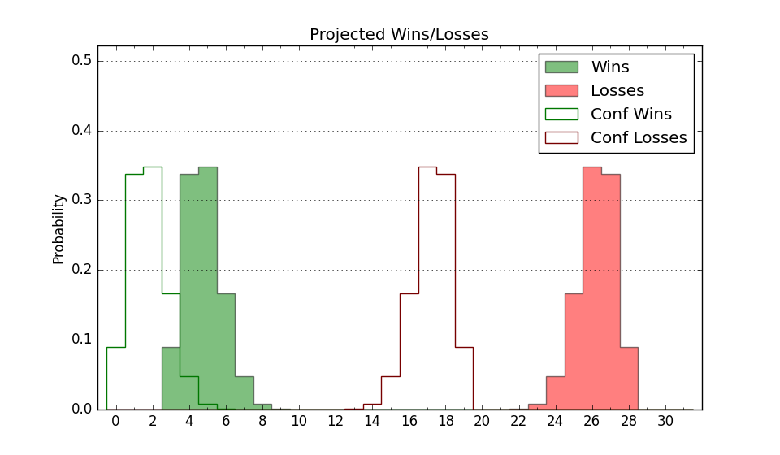

| Home | Game Probabilities | Conferences | Preseason Predictions | Odds Charts | NCAA Tournament |
| City: | Greensboro, North Carolina | |
| Conference: | Colonial (14th)
| |
| Record: | 0-11 (Conf) 3-20 (Overall) | |
| Ratings: | Comp.: -17.3 (333rd) Net: -17.4 (331st) Off: 97.8 (308th) Def: 115.2 (328th) SoR: 0.0 (130th) |
| Remaining | ||||||
|---|---|---|---|---|---|---|
| Date | Opponent | Win Prob | Pred. | |||
| 2/8 | @ Campbell (173) | 10.1% | L 66-81 | |||
| 2/10 | @ Campbell (173) | 10.1% | L 66-81 | |||
| 2/13 | @ Elon (160) | 8.6% | L 66-82 | |||
| 2/15 | College of Charleston (167) | 26.1% | L 76-84 | |||
| 2/20 | Campbell (173) | 27.7% | L 70-77 | |||
| 2/22 | Stony Brook (349) | 71.7% | W 79-72 | |||
| 2/27 | @ Northeastern (200) | 11.8% | L 70-84 | |||
| 3/1 | @ Hofstra (194) | 11.2% | L 61-76 | |||
| Previous | Game Score | |||||
| Date | Opponent | Win Prob | Result | Off | Def | Net |
| 11/7 | @Wake Forest (72) | 2.5% | L 64-80 | -3.8 | 17.9 | 14.1 |
| 11/12 | @George Washington (149) | 7.8% | L 80-85 | 12.5 | 2.5 | 15.0 |
| 11/17 | @The Citadel (359) | 57.6% | W 82-73 | 11.2 | 2.1 | 13.3 |
| 11/20 | Morgan St. (346) | 71.3% | W 86-83 | -7.1 | 5.3 | -1.8 |
| 11/25 | @Buffalo (342) | 40.5% | L 81-82 | -0.7 | 5.1 | 4.5 |
| 11/29 | @East Carolina (187) | 10.6% | L 69-93 | 3.7 | -14.8 | -11.1 |
| 12/3 | @Hampton (276) | 22.0% | L 71-82 | -3.9 | -4.3 | -8.2 |
| 12/7 | UNC Greensboro (126) | 18.8% | L 55-67 | -11.8 | 6.4 | -5.4 |
| 12/12 | @Virginia Tech (151) | 7.9% | L 67-95 | -7.1 | 2.2 | -4.9 |
| 12/14 | @Liberty (74) | 2.6% | L 74-83 | 15.0 | 5.0 | 20.0 |
| 12/17 | Coastal Carolina (313) | 59.4% | L 68-73 | -13.0 | -3.0 | -15.9 |
| 12/21 | @Arkansas (44) | 1.4% | L 67-95 | 8.8 | -2.6 | 6.2 |
| 12/28 | North Carolina Central (292) | 53.2% | W 85-72 | 18.9 | 0.4 | 19.2 |
| 1/2 | Elon (160) | 24.4% | L 67-75 | 4.2 | -9.6 | -5.4 |
| 1/4 | Drexel (199) | 31.3% | L 59-68 | -15.7 | 6.4 | -9.3 |
| 1/9 | Delaware (250) | 43.2% | L 88-98 | -6.3 | -3.2 | -9.5 |
| 1/11 | @William & Mary (229) | 14.9% | L 78-81 | 2.9 | 14.5 | 17.4 |
| 1/16 | Monmouth (269) | 47.9% | L 63-72 | -13.1 | -2.1 | -15.1 |
| 1/20 | Hampton (276) | 49.0% | L 73-74 | 8.1 | -4.5 | 3.7 |
| 1/23 | @Towson (176) | 10.2% | L 67-83 | 2.2 | -9.9 | -7.8 |
| 1/25 | @Stony Brook (349) | 42.7% | L 74-89 | 2.1 | -19.4 | -17.3 |
| 1/30 | UNC Wilmington (118) | 17.3% | L 59-83 | -10.0 | -11.9 | -22.0 |
| 2/6 | @College of Charleston (167) | 9.4% | L 63-66 | 1.6 | 16.3 | 17.8 |
| Stats & Trends | |||||
|---|---|---|---|---|---|
| Current | Day | Week | Month | Season | |
| Composite | -17.3 | +0.7 | +0.8 | -2.3 | -3.4 |
| Comp Rank | 333 | +2 | +3 | -14 | -20 |
| Net Efficiency | -17.4 | +0.8 | +0.8 | -2.2 | -- |
| Net Rank | 331 | +4 | +6 | -16 | -- |
| Off Efficiency | 97.8 | +0.1 | -0.1 | -1.1 | -- |
| Off Rank | 308 | +5 | -5 | -38 | -- |
| Def Efficiency | 115.2 | +0.6 | +0.9 | -1.1 | -- |
| Def Rank | 328 | +4 | +8 | -5 | -- |
| SoS Rank | 269 | +13 | +10 | -45 | -- |
| Exp. Wins | 4.8 | -0.0 | +0.1 | -3.2 | -5.6 |
| Exp. Conf Wins | 1.8 | -0.0 | +0.1 | -3.2 | -5.1 |
| Conf Champ Prob | 0.0 | -- | -- | -0.0 | -0.8 |

| Advanced Stats | ||
|---|---|---|
| Stat | Value | Rank |
| Off Eff FG % | 0.454 | 331 |
| Off Ast Ratio | 0.116 | 339 |
| Off ORB% | 0.231 | 316 |
| Off TO Rate | 0.122 | 27 |
| Off FT Ratio | 0.322 | 201 |
| Def Eff FG % | 0.530 | 257 |
| Def Ast Ratio | 0.175 | 346 |
| Def ORB% | 0.328 | 316 |
| Def TO Rate | 0.126 | 314 |
| Def FT Ratio | 0.305 | 123 |